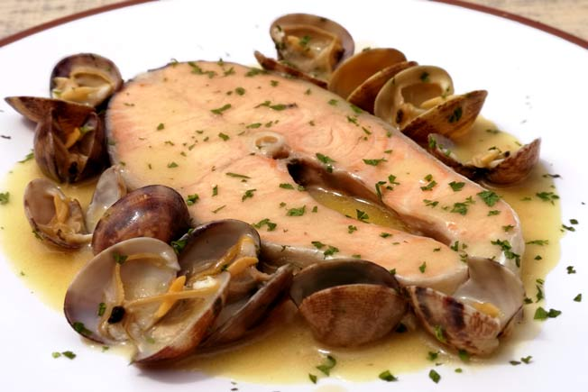

Salmón con almejas

- Solicita a tu pescader@ de confianza unas buenas rodajas de salmón salvaje (Unos 175-200 gr por rodaja). Comienza salpicando ligeramente con sal gruesa las rodajas de salmón unos 15-20 minutos antes de su elaboración.
- En una olla baja o cazuela de barro vierte el aceite de oliva y calienta a fuego lento. Agrega el ajo previamente picado en brunoise, rehoga unos segundos pero sin que llegue a dorarse e incorpora a continuación la cebolla y un trocito de blanco de puerro, todo finamente picado. Pocha a fuego lento durante 6-7 minutos hasta que las hortalizas se vuelvan transparentes.
- Añade entonces la harina e incorpórala removiendo con ayuda de un batidor de varillas. Moja con el vino Ribeiro y remueve bien hasta obtener una pasta homogénea dejando reducir unos segundos para evaporar parte del alcohol que contiene.
- Vierte ahora el fumet de pescados removiendo a la vez con el batidor, para conseguir una salsa fina y homogénea. Agrega una pizca de sal y deja hervir unos 15 minutos a fuego moderado.
- Una vez completado el tiempo de cocción vierte la salsa en el vaso de la batidora o un recipiente apropiado (Preferentemente alto) y tritura con ayuda de la batidora durante unos segundos. Deposita de nuevo la salsa en la cazuela, incorpora las rodajas de salmón crudas (Tal cual,... sin enharinar !!) y las almejas previamente lavadas y escurridas.
- Tapa la cazuela y deja cocer a fuego lento. Transcurridos unos 5 minutos puedes dar la vuelta a las rodajas de salmón pero cuidando que no se rompan. Completa la cocción unos 8-10 minutos más, hasta que el salmón esté en su punto y las almejas se hayan abierto por completo. Si observas que la salsa está demasiado espesa, puedes añadir un poco más de fumet caliente.
- Retira del fuego, rectifica el punto de sazonamiento, espolvorea con perejil fresco picado y prepárate a disfrutar del intenso sabor de esta combinación.
| Ingredientes |
Cantidad |
| Rodajas salmón salvaje |
4 unidades |
| Almejas |
300Gr |
| Dientes ajo |
2 unidades |
| Cebolla pequeña |
1 unidad |
| Puerro |
Un trozo |
| Perejil picado |
1 cucharada |
| Aceite de oliva virgen extra |
1/2 vaso |
| Vino blanco Ribeiro |
1/2 litro |
| Fumet de pescado |
1/2 litro |
| Harina |
2 cucharadas rasas |
| Sal |
1 Pizca |
Alergenos
- Gluten
- Moluscos
- Pescado
- Sulfitos
Para buscar información sobre el plato Pincha aquí